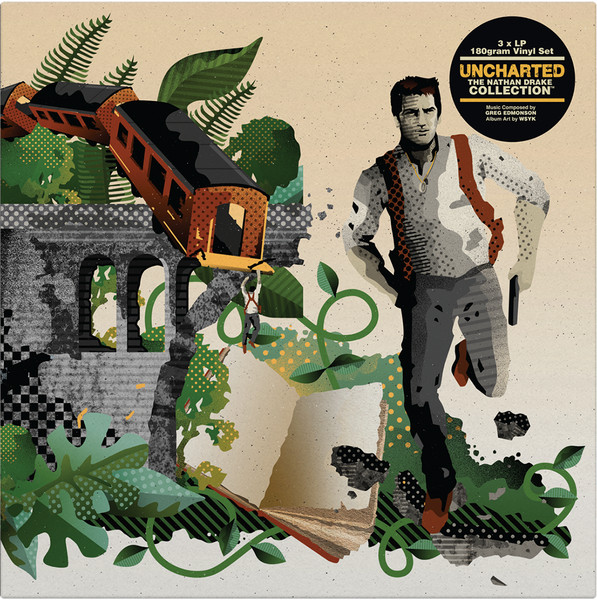

Fragment I · Circa 2007 CE · The First Known Work

Various — Uncharted · Flow Records @ Feb. 07
Various — Uncharted
Hi All !
The lovely label, Flow, is back to business with new compilation, full of progressive suprises selected by new project called Citizen (side project of Zen Mechanics). "Uncharted" is actually the first release of this label for this year and this info is just make the expections higher. On the track list you can find popular and honorable names like Atmos, James Monro, Perfect Stranger, Freq and more....
So, now it the time to check what is hiding behind those impressive names.
- 01.Perfect Stranger & Pena - Ode ao sol What is more pleasant for start than collaboration of two pioneers - Yuli & Pena. "Ode ao sol" track is just brilliant, everything is going on slowly and smartly like it should be. The tempo is low but the vibes just going up and up. The brake is very clever - short male vocal, nervous atmosphere and than come the uplifting kick, which load smiles on the listener's face big time. Great opening guys.
- 02.Citizen - Uncharted The Citizen project (Wouter & Sander) is taking this VA one level up. The track is built well from the first second till the last one. The process is developing gradually like the proggy offical rules . All those happy playings around just make it more pumpy and jumpy. The power factor is still not on maximum, but "Uncharted" track is a big step for that.
- 03.Atmos - Luxor The groove's master is here !!! the respectable artist is present his latest mateiral called "Luxor". What a pleasure - everything is located on the right place and the unique atmosphere of Atmos is the highlight thing for me. This tune is a hallucinate trip to higher zones with deep diging element. The level of the production is very high with excellent qualiy of sound. No words can describe the beautiful seven and half mins which called "Luxor". The first track-list included 8 track without this one, but I guess it's was a crime to give up on this track.
- 04.Dick Trevor & James Monro - The big squeeze The experienced Monro unite forces with Mr. Trevor for create this loop. The style here is a bit diffrent than the first tracks, "The big squeeze" tune is deeper with more influences from the electro genre and together the result is amazing. A music with story beyond and remarkable moments. A fine variation for the next to come.
- 05.Liftshift - Window to the world The fresh comers from Holland, Erik and Claus, is on the stage now. Their track is disappointed me a bit, because the non- creation of ideas and games as I like to hear. The track is groovy and flowing well but something is missing for me, maybe a special melody or powerful brake. Anyway, give your chance for this project and you might like it.
- 06.Annarchy - Wherever The bigest suprise in this cd is "Wherever" track by the terrific woman - Anna Heifetz from Israel. Annarchy is a promising project, which futured to release many tracks soon, and here she is just bought one more fan. I think it's been a while since this kind of music came out from the holy-land - the kick is fat and heavy, the baseline is chilly but somehow the body is moving without control. The brain is also have a job here and with all this characteristics, we get a marvelous experience. People keep your eyes for this super talented girl.
- 07.Freq - Awaken (lish RMX) Shay & Lior (LISH) are an appricated project and thats maybe the reason for their choice to take one of Aran's (FREQ) best work and spill their ideas on it. This guys took the Lish typical style, put it on this track and save the unforgetable melodies from the original track...you ask how is the final product ? AMAZING !!! simply a rare track with the most special vibes I heard lately. Way to go Lish for another successful remix, despite the big challenge.
- 08.Zen Mechanics - Ground Control (Perfect Stranger RMX) I really hope you are all prepare for one of the legendary tracks ever. This remix is definitely the best work on this compilation. It's the same project from the first track, but this time Yuli is alone inside the studio and let all his crazy impulses come out without pity on anyone. With all the respect for Wouter, but this new mix is few levels up - the PS line is fit well to "Ground Control" track. The best moment here for me is the brake, which starts from 03:50 and left me speachless with huge smile on the face and try to understand what the hell was it ?! Thank you Yuli "genious" Fershtat !!!
- 09.Flowjob - Jessica Lee It's a very hard work to take the control after massive tune like the last one, but you can trust on the Flow-Job guys. "Jessica Lee" is the most suitable track for close such a rare compilation. The tune is followed be female singing and cheezy elements all over the way. Well, how can I sum up this special experience I passed here ? I don't think words are enough for give you a clue about the music here and the only option you have is to get it somehow. Flow Records - I can say surely that this is your BEST release so far, please keep it up. You can get it here : Or here : A MUST CD !!!
Accession No. GC-2007 · Music Reviews Wing · The First Work
Condition: Complete — 9 sub-inscriptions intact
Also on Flow RecordsYotopia - Point Blank · Various — 5 Years · Various — Globalize - compiled by Yotopia · Various — Daily Basis · Various — Globalize Vol. 2